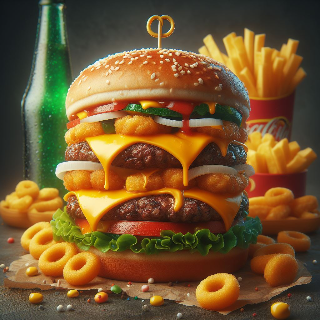
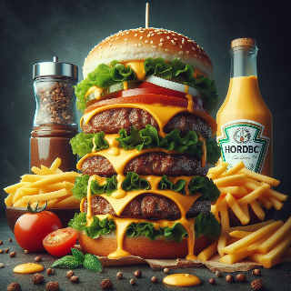
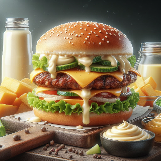
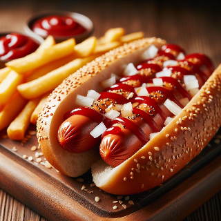
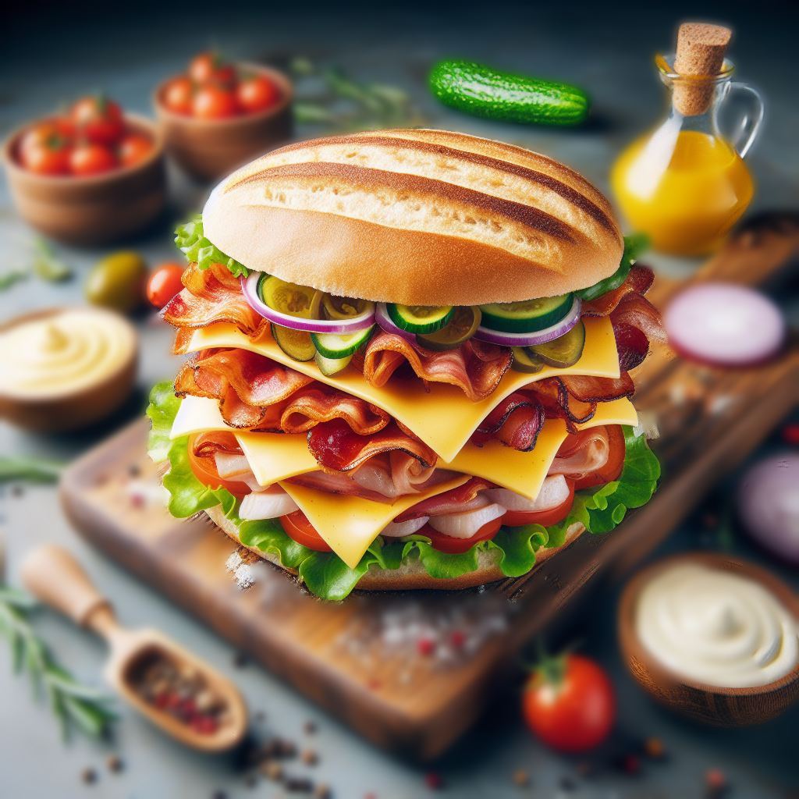

¡Qué bolá! Estamos seguros que necesitas probar las mejores hamburguesas
de la Habana. Únete a la familia de los líderes en comida rápida de toda Cuba, te
esperamos. Somos los número uno cuando tratamos con nuestros clientes.
No existe un servicio más profesional que el que encontrarás en esta casa.
Sabemos que deseas unas jugosas hamburguesas, unos deliciosos sandwiches,
mientras comes una cantidad ridícula de papas fritas. No hallarás mejor precio,
no lo tienes que pensar. ¡Llama ahora!
Nuestros mejores productos

Hamburguesa Doble
La clásica hamburguesa de carne de cerdo, pollo y res con vegetales y queso.
Posee la mejor relación calidad/precio, por eso es el platillo más popular
de la casa.

Mega burger
La obra cumbre de nuestra cocina: una hamburguesa múltiple de varias carnes
y quesos. Se ha convertido en la especialidad de la casa.

Especial mayonesa
Hamburguesa simple con queso y vegetales aderezada con salsa mayonesa por encima
de la carne. Son las preferidas de los clientes para comer con papas fritas.

Hotdog doble
El pan con perro caliente más aclamado en las calles de la Habana, perfecto para
comer por el camino. Sin duda el más adictivo de nuestros platillos.

Sandwich imperial
La oferta más joven y atractiva de nuestro menú: un sandwich de varios niveles con
abundante queso, mayonesa, bacon, vegetales y lomo de cerdo.